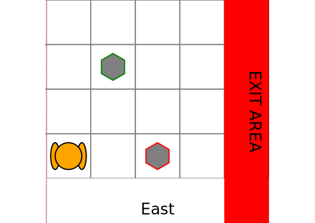
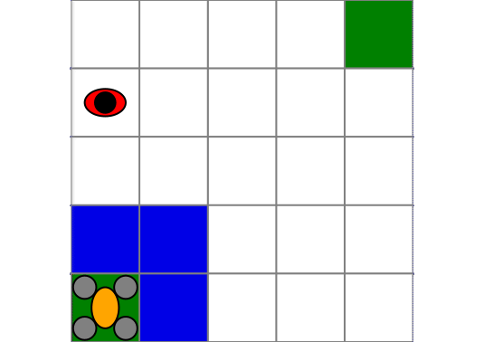

Model Checking Solver
Model checking consists of computing the maximum probability of satisfying a logical formula in a given state of an MDP, or in a given belief state of a POMDP. The approach in POMDPModelChecking.jl is to internally convert the problem into a reachability problem. This conversion is done automatically and supports any discrete state and discrete actions model.
The model checking solver can also be used as a way to solve POMDPs using a logical formula as input in place of the traditional reward function.
Specifying formulas
Formulas are expressed using linear temporal logic. We use Spot.jl to parse and manipulate such formulas.
using Spot
safety = ltl"!crash U goal"
mission = ltl"F good_rock & F exit & G !bad_rock""Fgood_rock & Fexit & G!bad_rock"Those formulas read in plain english respectively as follows: "Do not crash until you reach the goal", "Eventually pick up a good rock and eventually exit and never pick up a bad rock".
Each ltl formula is composed of atomic propositions: crash, goal, good_rock... A POMDP problem writer must specify a labeling function that returns which proposition hold true in a given state.
One must implement the function POMDPModelChecking.labels(problem::M, s::S, a::A) where M is the problem type, S the state type of the problem, and A the action type. This function must return a tuple of symbols. Each symbol corresponds to the atomic propositions that hold true in this state.
POMDPModelChecking.labels — FunctionReturns the labels associated with state s For each state, it should return a list of atomic proposition that evaluate to true, all the other propositions are assumed false. labels(mdp::M, s, a) where {M <: Union{MDP,POMDP}}
Solving model checking problems
Given a POMDP or MDP model, a labeling function and a formula, one can solve a model checking problem using the ModelCheckingSolver. Its interface is similar to any other solver in POMDPs.jl.
POMDPModelChecking.ModelCheckingSolver — TypeModelCheckingSolverA probabilistic model checker for MDPs and POMDPs with LTL specification. The solver takes as input an LTL formula and the underlying MDP/POMDP planning algorithm used to perform the model checking. It supports any solver from POMDPs.jl. Internally, this solver requires a discrete state and discrete action model.
Fields
property::SpotFormulasolver::Solverany MDP/POMDP solvertolerance::Float64 = 1e-3verbose::Bool = true
Examples
Rock Sample
Let's use the rock sample problem as an example. The robot must pick up a good rock and then exit the environment. The model checking problem will be to compute the maximum probability of picking a good rock without ever picking up a bad rock and then coming back to the base.
using POMDPs
using Spot
using POMDPModelChecking
using RockSample
using SARSOP
pomdp = RockSamplePOMDP{2}(map_size=(4,4),
rocks_positions=[(2,3), (3,1)])
prop = ltl"F good_rock & G !bad_rock & F exit"
# Define the labeling function which tells which proposition hold true in a given state
# For the rock sample problem, good_rock holds true if the robot is on a good rock location
# and take the action `sample` (a=5)
# similarly, bad_rock holds true if the robot samples a bad rock
# The exit proposition is true if the robot reached a terminal state
function POMDPModelChecking.labels(pomdp::RockSamplePOMDP, s::RSState, a::Int64)
if a == RockSample.BASIC_ACTIONS_DICT[:sample] && in(s.pos, pomdp.rocks_positions) # sample
rock_ind = findfirst(isequal(s.pos), pomdp.rocks_positions) # slow ?
if s.rocks[rock_ind]
return (:good_rock,)
else
return (:bad_rock,)
end
end
if isterminal(pomdp, s)
return (:exit,)
end
return ()
end
solver = ModelCheckingSolver(property=prop,
solver=SARSOPSolver(precision=1e-3, timeout=5), verbose=true)
policy = solve(solver, pomdp);ModelCheckingPolicy{POMDPTools.Policies.AlphaVectorPolicy{ProductPOMDP{RockSample.RSState{2}, Int64, Int64, Int64, Spot.DeterministicRabinAutomata, Float64}, Int64}, ProductPOMDP{RockSample.RSState{2}, Int64, Int64, Int64, Spot.DeterministicRabinAutomata, Float64}, Int64}(POMDPTools.Policies.AlphaVectorPolicy{ProductPOMDP{RockSample.RSState{2}, Int64, Int64, Int64, Spot.DeterministicRabinAutomata, Float64}, Int64}(ProductPOMDP{RockSample.RSState{2}, Int64, Int64, Int64, Spot.DeterministicRabinAutomata, Float64}(RockSample.RockSamplePOMDP{2}
map_size: Tuple{Int64, Int64}
rocks_positions: StaticArraysCore.SVector{2, StaticArraysCore.SVector{2, Int64}}
init_pos: StaticArraysCore.SVector{2, Int64}
sensor_efficiency: Float64 20.0
bad_rock_penalty: Float64 -10.0
good_rock_reward: Float64 10.0
step_penalty: Float64 0.0
sensor_use_penalty: Float64 0.0
exit_reward: Float64 10.0
terminal_state: RockSample.RSState{2}
indices: Array{Int64}((3,)) [4, 16, 32]
discount_factor: Float64 0.95
, Spot.DeterministicRabinAutomata(1, 1:4, {4, 9} directed Int64 metagraph with Float64 weights defined by :weight (default weight 1.0), [:good_rock, :exit, :bad_rock], Tuple{Set{Int64}, Set{Int64}}[(Set(), Set([2]))]), Set(ProductState{RockSample.RSState{2}, Int64}[ProductState{RockSample.RSState{2}, Int64}(RockSample.RSState{2}([1, 4], Bool[1, 1]), 2), ProductState{RockSample.RSState{2}, Int64}(RockSample.RSState{2}([3, 1], Bool[0, 1]), 2), ProductState{RockSample.RSState{2}, Int64}(RockSample.RSState{2}([1, 1], Bool[0, 0]), 2), ProductState{RockSample.RSState{2}, Int64}(RockSample.RSState{2}([-1, -1], Bool[0, 0]), 2), ProductState{RockSample.RSState{2}, Int64}(RockSample.RSState{2}([4, 2], Bool[0, 1]), 2), ProductState{RockSample.RSState{2}, Int64}(RockSample.RSState{2}([2, 1], Bool[0, 0]), 2), ProductState{RockSample.RSState{2}, Int64}(RockSample.RSState{2}([2, 3], Bool[0, 1]), 2), ProductState{RockSample.RSState{2}, Int64}(RockSample.RSState{2}([2, 2], Bool[1, 0]), 2), ProductState{RockSample.RSState{2}, Int64}(RockSample.RSState{2}([3, 2], Bool[0, 1]), 2), ProductState{RockSample.RSState{2}, Int64}(RockSample.RSState{2}([1, 1], Bool[1, 1]), 2) … ProductState{RockSample.RSState{2}, Int64}(RockSample.RSState{2}([1, 1], Bool[1, 0]), 2), ProductState{RockSample.RSState{2}, Int64}(RockSample.RSState{2}([4, 1], Bool[1, 0]), 2), ProductState{RockSample.RSState{2}, Int64}(RockSample.RSState{2}([3, 2], Bool[0, 0]), 2), ProductState{RockSample.RSState{2}, Int64}(RockSample.RSState{2}([1, 3], Bool[0, 1]), 2), ProductState{RockSample.RSState{2}, Int64}(RockSample.RSState{2}([1, 1], Bool[0, 1]), 2), ProductState{RockSample.RSState{2}, Int64}(RockSample.RSState{2}([2, 3], Bool[0, 0]), 2), ProductState{RockSample.RSState{2}, Int64}(RockSample.RSState{2}([4, 1], Bool[0, 1]), 2), ProductState{RockSample.RSState{2}, Int64}(RockSample.RSState{2}([1, 2], Bool[1, 1]), 2), ProductState{RockSample.RSState{2}, Int64}(RockSample.RSState{2}([3, 2], Bool[1, 1]), 2), ProductState{RockSample.RSState{2}, Int64}(RockSample.RSState{2}([3, 4], Bool[1, 1]), 2)]), ProductState{RockSample.RSState{2}, Int64}(RockSample.RSState{2}([1, 1], Bool[0, 0]), -1), 0.999), 261, [[0.0, 0.0, 0.996006, 0.0, 0.0, 0.0, 0.997003, 0.0, 0.0, 0.0 … 0.0, 0.0, 0.0, 0.999, 0.0, 0.0, 0.0, 1.0, 0.0, 0.0], [0.0, 0.0, 0.99501, 0.0, 0.0, 0.0, 0.996006, 0.0, 0.0, 0.0 … 0.0, 0.0, 0.0, 0.998001, 0.0, 0.0, 0.0, 1.0, 0.0, 0.0], [0.0, 0.0, 0.0, 0.0, 0.0, 0.0, 0.996006, 0.0, 0.0, 0.0 … 0.0, 0.0, 0.0, 0.999, 0.0, 0.0, 0.0, 1.0, 0.0, 0.0], [0.0, 0.0, 0.99501, 0.0, 0.0, 0.0, 0.0, 0.0, 0.0, 0.0 … 0.0, 0.0, 0.0, 0.999, 0.0, 0.0, 0.0, 1.0, 0.0, 0.0], [0.0, 0.0, 0.994015, 0.0, 0.0, 0.0, 0.99501, 0.0, 0.0, 0.0 … 0.0, 0.0, 0.0, 0.997003, 0.0, 0.0, 0.0, 1.0, 0.0, 0.0], [0.0, 0.0, 0.993021, 0.0, 0.0, 0.0, 0.0, 0.0, 0.0, 0.0 … 0.0, 0.0, 0.0, 0.996006, 0.0, 0.0, 0.0, 1.0, 0.0, 0.0], [0.0, 0.0, 0.0, 0.0, 0.0, 0.0, 0.993021, 0.0, 0.0, 0.0 … 0.0, 0.0, 0.0, 0.999, 0.0, 0.0, 0.0, 1.0, 0.0, 0.0], [0.0, 0.0, 0.992094, 0.0, 0.0, 0.0, 0.0, 0.0, 0.0, 0.0 … 0.0, 0.0, 0.0, 0.997846, 0.0, 0.0, 0.0, 1.0, 0.0, 0.0], [0.0, 0.0, 0.991997, 0.0, 0.0, 0.0, 0.0, 0.0, 0.0, 0.0 … 0.0, 0.0, 0.0, 0.996753, 0.0, 0.0, 0.0, 1.0, 0.0, 0.0], [0.0, 0.0, 0.991106, 0.0, 0.0, 0.0, 0.0, 0.0, 0.0, 0.0 … 0.0, 0.0, 0.0, 0.997884, 0.0, 0.0, 0.0, 1.0, 0.0, 0.0], [0.0, 0.0, 0.0, 0.0, 0.0, 0.0, 0.992028, 0.0, 0.0, 0.0 … 0.0, 0.0, 0.0, 0.999, 0.0, 0.0, 0.0, 1.0, 0.0, 0.0], [0.0, 0.0, 0.0, 0.0, 0.0, 0.0, 0.992028, 0.0, 0.0, 0.0 … 0.0, 0.0, 0.0, 0.999, 0.0, 0.0, 0.0, 1.0, 0.0, 0.0], [0.0, 0.0, 0.990975, 0.0, 0.0, 0.0, 0.0, 0.0, 0.0, 0.0 … 0.0, 0.0, 0.0, 0.996828, 0.0, 0.0, 0.0, 1.0, 0.0, 0.0], [0.0, 0.0, 0.989129, 0.0, 0.0, 0.0, 0.989129, 0.0, 0.0, 0.0 … 0.0, 0.0, 0.0, 0.994904, 0.0, 0.0, 0.0, 1.0, 0.0, 0.0], [0.0, 0.0, 0.990119, 0.0, 0.0, 0.0, 0.0, 0.0, 0.0, 0.0 … 0.0, 0.0, 0.0, 0.997888, 0.0, 0.0, 0.0, 1.0, 0.0, 0.0], [0.0, 0.0, 0.990942, 0.0, 0.0, 0.0, 0.0, 0.0, 0.0, 0.0 … 0.0, 0.0, 0.0, 0.996832, 0.0, 0.0, 0.0, 1.0, 0.0, 0.0], [0.0, 0.0, 0.0, 0.0, 0.0, 0.0, 0.991036, 0.0, 0.0, 0.0 … 0.0, 0.0, 0.0, 0.999, 0.0, 0.0, 0.0, 1.0, 0.0, 0.0], [0.0, 0.0, 0.0, 0.0, 0.0, 0.0, 0.992028, 0.0, 0.0, 0.0 … 0.0, 0.0, 0.0, 0.999, 0.0, 0.0, 0.0, 1.0, 0.0, 0.0]], [3, 1, 3, 3, 2, 2, 3, 7, 7, 7, 3, 3, 7, 5, 7, 7, 3, 3]), ProductPOMDP{RockSample.RSState{2}, Int64, Int64, Int64, Spot.DeterministicRabinAutomata, Float64}(RockSample.RockSamplePOMDP{2}
map_size: Tuple{Int64, Int64}
rocks_positions: StaticArraysCore.SVector{2, StaticArraysCore.SVector{2, Int64}}
init_pos: StaticArraysCore.SVector{2, Int64}
sensor_efficiency: Float64 20.0
bad_rock_penalty: Float64 -10.0
good_rock_reward: Float64 10.0
step_penalty: Float64 0.0
sensor_use_penalty: Float64 0.0
exit_reward: Float64 10.0
terminal_state: RockSample.RSState{2}
indices: Array{Int64}((3,)) [4, 16, 32]
discount_factor: Float64 0.95
, Spot.DeterministicRabinAutomata(1, 1:4, {4, 9} directed Int64 metagraph with Float64 weights defined by :weight (default weight 1.0), [:good_rock, :exit, :bad_rock], Tuple{Set{Int64}, Set{Int64}}[(Set(), Set([2]))]), Set(ProductState{RockSample.RSState{2}, Int64}[ProductState{RockSample.RSState{2}, Int64}(RockSample.RSState{2}([1, 4], Bool[1, 1]), 2), ProductState{RockSample.RSState{2}, Int64}(RockSample.RSState{2}([3, 1], Bool[0, 1]), 2), ProductState{RockSample.RSState{2}, Int64}(RockSample.RSState{2}([1, 1], Bool[0, 0]), 2), ProductState{RockSample.RSState{2}, Int64}(RockSample.RSState{2}([-1, -1], Bool[0, 0]), 2), ProductState{RockSample.RSState{2}, Int64}(RockSample.RSState{2}([4, 2], Bool[0, 1]), 2), ProductState{RockSample.RSState{2}, Int64}(RockSample.RSState{2}([2, 1], Bool[0, 0]), 2), ProductState{RockSample.RSState{2}, Int64}(RockSample.RSState{2}([2, 3], Bool[0, 1]), 2), ProductState{RockSample.RSState{2}, Int64}(RockSample.RSState{2}([2, 2], Bool[1, 0]), 2), ProductState{RockSample.RSState{2}, Int64}(RockSample.RSState{2}([3, 2], Bool[0, 1]), 2), ProductState{RockSample.RSState{2}, Int64}(RockSample.RSState{2}([1, 1], Bool[1, 1]), 2) … ProductState{RockSample.RSState{2}, Int64}(RockSample.RSState{2}([1, 1], Bool[1, 0]), 2), ProductState{RockSample.RSState{2}, Int64}(RockSample.RSState{2}([4, 1], Bool[1, 0]), 2), ProductState{RockSample.RSState{2}, Int64}(RockSample.RSState{2}([3, 2], Bool[0, 0]), 2), ProductState{RockSample.RSState{2}, Int64}(RockSample.RSState{2}([1, 3], Bool[0, 1]), 2), ProductState{RockSample.RSState{2}, Int64}(RockSample.RSState{2}([1, 1], Bool[0, 1]), 2), ProductState{RockSample.RSState{2}, Int64}(RockSample.RSState{2}([2, 3], Bool[0, 0]), 2), ProductState{RockSample.RSState{2}, Int64}(RockSample.RSState{2}([4, 1], Bool[0, 1]), 2), ProductState{RockSample.RSState{2}, Int64}(RockSample.RSState{2}([1, 2], Bool[1, 1]), 2), ProductState{RockSample.RSState{2}, Int64}(RockSample.RSState{2}([3, 2], Bool[1, 1]), 2), ProductState{RockSample.RSState{2}, Int64}(RockSample.RSState{2}([3, 4], Bool[1, 1]), 2)]), ProductState{RockSample.RSState{2}, Int64}(RockSample.RSState{2}([1, 1], Bool[0, 0]), -1), 0.999), 1)We can visualize the policy as follows:
using Random
using POMDPTools
using POMDPGifs
# first simulate the product pomdp
rng = MersenneTwister(2)
up = DiscreteUpdater(policy.problem)
b0 = initialize_belief(up, initialstate(policy.problem))
hr = HistoryRecorder(max_steps=50, rng=rng)
product_hist = simulate(hr, policy.problem, policy, up, b0);
# create a new history with the pomdp state and action, to be replayed and visualized
hist = SimHistory([(s=s.s, a=a) for (s, a) in eachstep(product_hist, "(s,a)")],
discount(pomdp), nothing, nothing)
import Cairo
makegif(pomdp, hist, filename="rocksample.gif", spec="(s,a)");

Drone Surveillance
In this second example we use a drone surveillance problem where a drone must go from one corner to the other corner of a grid world while not being detected by a ground agent moving randomly.
The property we want to satisfy is "do not be detected until region b is reached", which in LTL is given by !detected U b
using POMDPs
using POMDPModelChecking
using Spot
using DroneSurveillance
using SARSOP
pomdp = DroneSurveillancePOMDP(size=(5,5), camera=PerfectCam())
prop = ltl"!detected U b"
function POMDPModelChecking.labels(pomdp::DroneSurveillancePOMDP, s::DSState, a::Int64)
if s.quad == pomdp.region_B
return (:b,)
elseif s.quad == s.agent && !(isterminal(pomdp, s))
return (:detetected,)
else
return ()
end
end
solver = ModelCheckingSolver(property = prop,
solver = SARSOPSolver(precision=1e-2, timeout=20), verbose=true)
policy = solve(solver, pomdp);
## Simulation and rendering
using Random
using POMDPTools
using POMDPGifs
# run the simulation in the product POMDP, policy.problem
rng = MersenneTwister(3)
up = DiscreteUpdater(policy.problem)
b0 = initialize_belief(up, initialstate(policy.problem))
hr = HistoryRecorder(max_steps=20, rng=rng)
product_hist = simulate(hr, policy.problem, policy, up, b0);
# create a new history with the pomdp state and action, to be replayed and visualized
hist = SimHistory([(s=s.s, a=a) for (s, a) in eachstep(product_hist, "(s,a)")], discount(pomdp), nothing, nothing)
import Cairo
makegif(pomdp, hist, filename="drone_surveillance.gif", spec="(s,a)");
